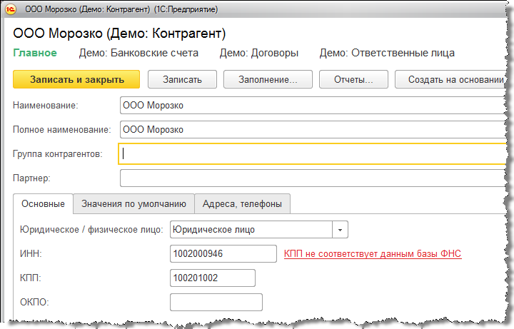
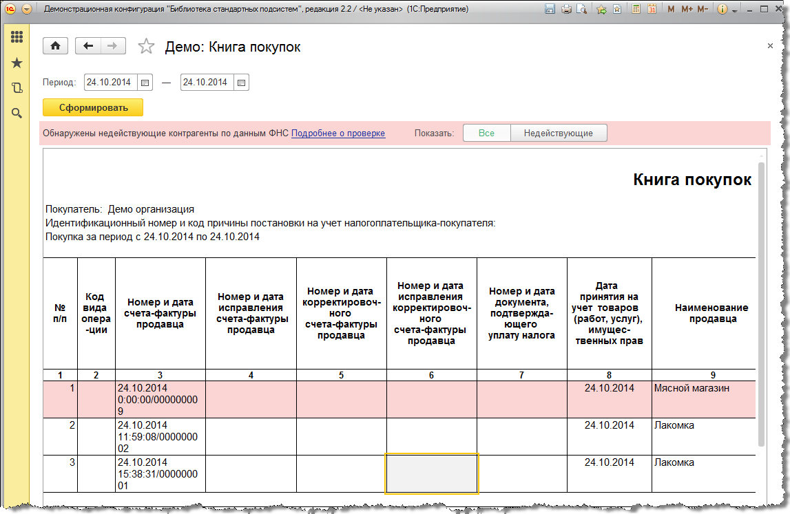

Контрагент есть в базе ФНС
-
означает, что налогоплательщик зарегистрирован в ЕГРН и имеет статус действующего в интервале ± 6 дней от даты запроса Не действует или изменен КПП
-
означает, что налогоплательщик зарегистрирован в ЕГРН, но не имеет статус действующего в интервале ± 6 дней от даты запроса.
Такой ответ можно интерпретировать следующим образом: либо контрагент с указанной комбинацией ИНН и КПП прекратил деятельность, либо указанный КПП был изменен, то есть, ранее комбинация ИНН и КПП была действительной, но теперь она недействительнаКПП не соответствует данным базы ФНС
-
означает, что КПП налогоплательщика не соотвествует тому ИНН, который был указан в запросе.
Такое сообщение означает, что такой комбинации ИНН и КПП в ЕГРН нет и никогда не былоКонтрагент отсутствует в базе ФНС
-
означает, что налогоплательщик с указанным ИНН не зарегистрирован в ЕГРН
Проверка производится при вводе нового контрагента и изменении реквизитов существующего. Статус проверки отображается в карточке контрагента, формах списка и выбора справочника контрагентов.
Результат проверки контрагента выводится в карточке в явном виде.

При отрицательном результате проверки в формах списка и выбора справочника ИНН и КПП контрагента окрашивается в красный цвет.

Если от ФНС получен ответ, что контрагент прекратил деятельность, то в форме списка контрагент будут выделен серым цветом.
Если контрагент уже был проверен ранее, то при открытии карточки контрагента повторная проверка не выполняется, а актуализация результата проверки контрагента выполняется регламентным заданием с периодичностью раз в неделю в фоновом режиме.
В режиме сервиса «1С:Предприятие через Интернет» проверка включена по умолчанию и не требует дополнительных настроек.
В отчетах проверка контрагентов выполняется в режиме реального времени, результат проверки выводится на специальной панели. Если в отчетах есть строки с документами от контрагентов, которые не были действующими на даты документов +-6 дней, то такие строки в отчете выделяются красным фоном, а в панели проверки появляется кнопка для отбора таких строк.

В документах в зависимости от результатов проверки контрагент и счет-фактура выделяются красным или зеленым фоном. Проверка контрагентов в документах выполняется в режиме реального времени.
.png)
Проверка производится при открытии документа, а так же при изменении контрагента, даты или при вводе счета-фактуры.
Документ выделяется красным фоном в списке, если на дату документа +- 6 дней контрагент не являлся действующим.